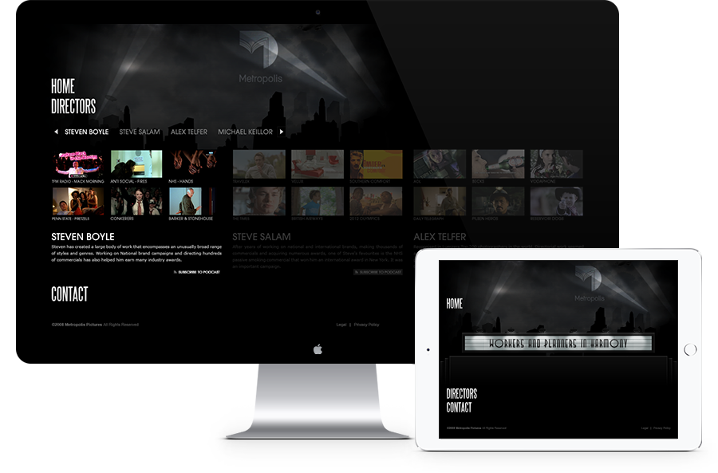

Metropolis Pictures
We were appointed to design and build a creative, quirky new portfolio website to showcase the talents of Metropolis Pictures' roster of world class commercial directors.
The key challenge was to bring a very simple proposition to life, in a creative, engaging user experience. Designed as a tribute to Fritz Lang's 1927 sci-fi masterpiece after which the company was named, even the copy contains echoes of the film's core themes and characters. The website was officially launched on the same day that the digitally restored print of the original film was released to cinema audiences across the world.